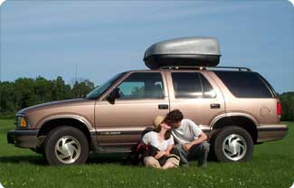

|
|
On June 11, 2002, Corin, Jared, and Ogden departed Greenfield, Massachusetts for a seven week trip across North America. 43 days later we returned home safely. |
|
We kept a log and took photos of our journey. Click the days below and follow our travels. Day 1 - Greenfield, MA - Clinton, NJ Day 2 - Clinton, NJ Day 3 - Clinton, NJ - Martinsburg, WV Day 4 - Martinsburg, WV - Droop, WV Day 5 - Droop, WV Day 6 - Droop, WV - Doughton Park, NC Day 7 - Doughton Park, NC - Smokey Mountain National Park, NC Day 8 - Smokepoint Great Smokey Mountains National Park, NC - McCalla, AL Day 9 - McCalla, AL - Saucier, MS Day 10 - Saucier, MS - Lake Charles, LA Day 11 - Lake Charles, LA - Austin, TX Day 12 - Austin, TX Day 13 - Austin, TX Day 14 - Austin, TX - Abilene State Park, Abilene, TX Day 15 - Abilene, TX - Carlsbad, NM Day 16 - Carlsbad, NM - Elephant Butte, NM Day 17 - Elephant Butte, NM - Las Vegas, NM Day 18 - Las Vegas, NM - Divide, CO Day 19 - Divide, CO - Palisade, CO Day 20 - Palisade, CO - Ferron, UT Day 21 - Ferron, UT - St. George, UT Day 22 - St. George, UT - Independence, CA Day 23 - Independence, CA - Lake Tahoe, CA Day 24 - Lake Tahoe, CA Day 25 - Lake Tahoe, CA - Douglas City, CA Day 26 - Douglas City, CA - Crescent City, CA Day 27 - Crescent City, CA - Otter Rock, OR Day 28 - Otter Rock, OR - Aloha, OR Day 29 - Aloha, OR - Mossyrock, WA Day 30 - Mossyrock, WA - Vashon Island, WA Day 31 - Vashon Island, WA Day 32 - Vashon Island, WA Day 33 - Vashon Island, WA Day 34 - Vashon Island, WA - Vancouver, BC Day 35 - Vancouver, BC - Kamloops, BC Day 36 - Kamloops, BC - Canmore, AB Day 37 - Canmore, AB - Stewart Valley, SK Day 38 - Stewart Valley, SK - Carberry, MB Day 39 - Carberry, MB - Ignace, ON Day 40 - Ignace, ON - Batchwana Bay, ON Day 41 - Batchwana Bay, ON - Ottawa, ON Day 42 - Ottawa, ON - Burlington, VT Day 43 - Burlington, VT - Greenfield, MA The End - Final words and Trip Facts |
| Last updated: 07/26/2002 |
{kind=link}